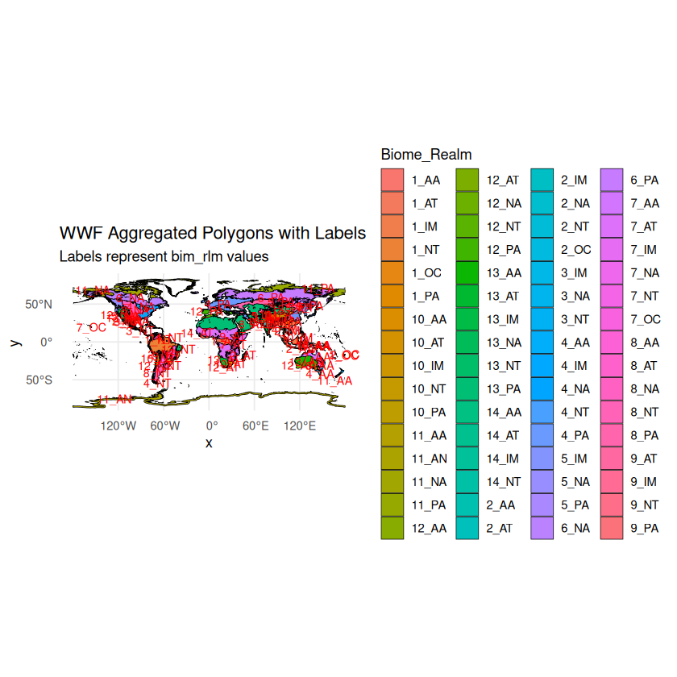
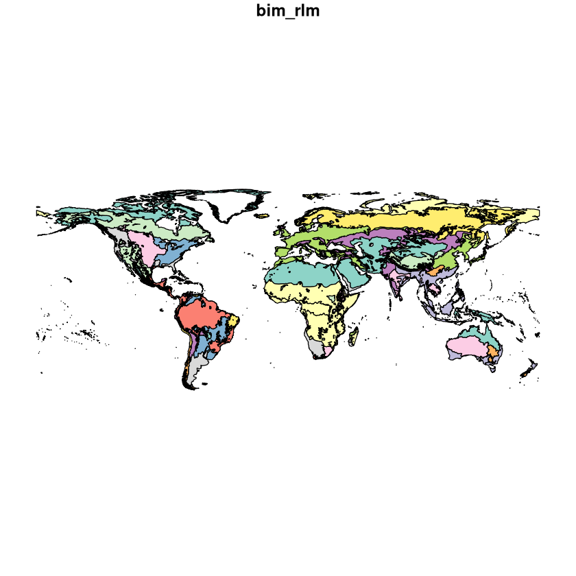
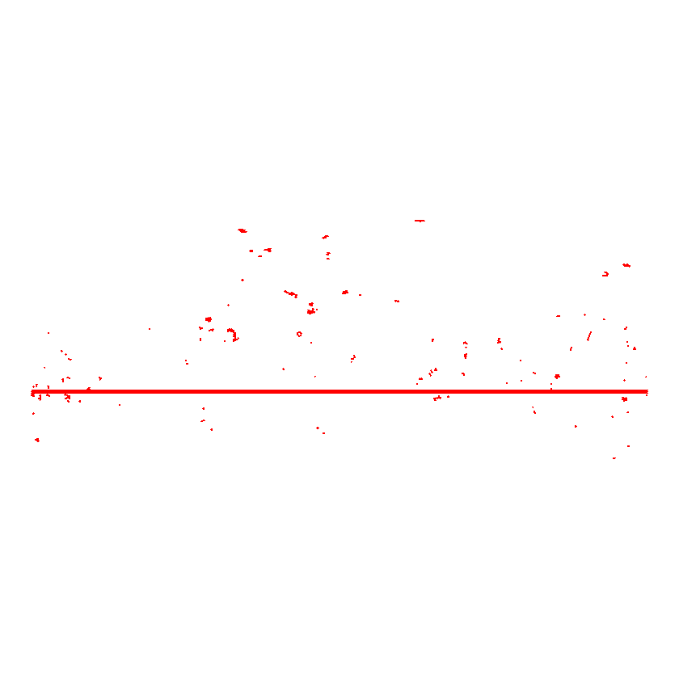
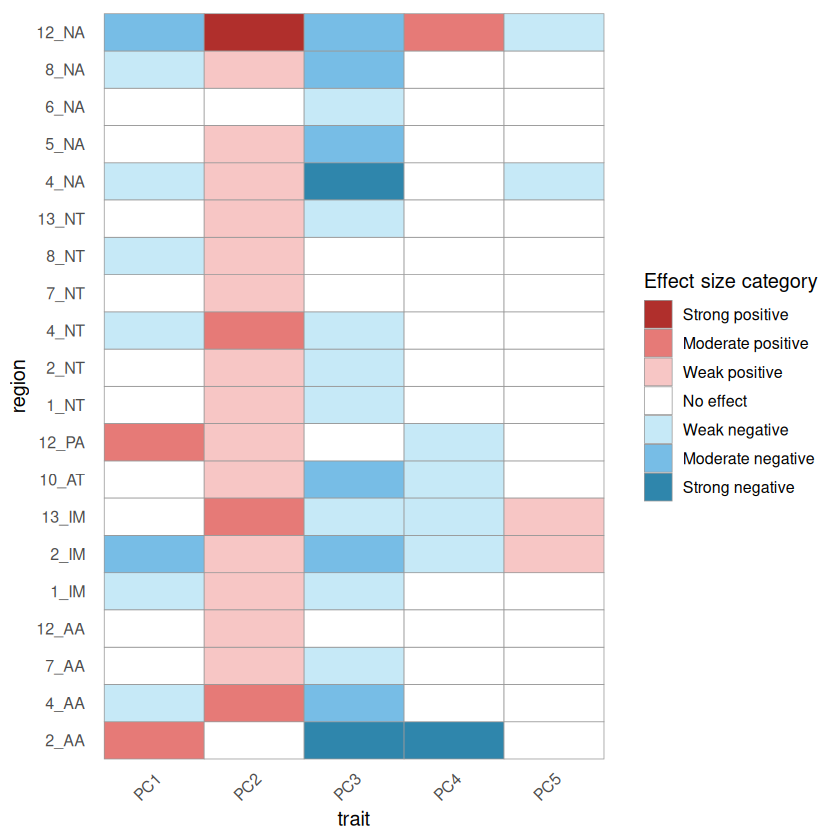
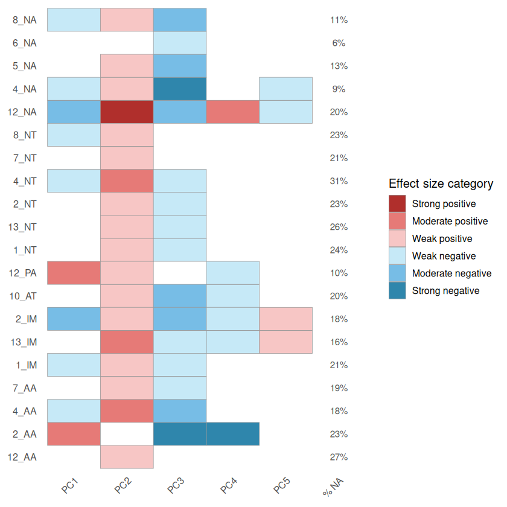

Biome shifts
Contents
Biome shifts#
Set path to include RStudio packages.
.libPaths(c("/net/home/swolf/R/x86_64-pc-linux-gnu-library/4.4", .libPaths()))
Load Data#
Summary stats per hexagon#
# Load all packages used in this notebook
library(data.table)
library(dplyr)
library(tidyr)
library(tibble)
library(sf)
library(h3)
library(ggplot2)
library(effsize) # Cliff's Delta
dtn = 10
setDTthreads(threads = dtn) # defines how many threads data.table is allowed to use
Attaching package: ‘dplyr’
The following objects are masked from ‘package:data.table’:
between, first, last
The following objects are masked from ‘package:stats’:
filter, lag
The following objects are masked from ‘package:base’:
intersect, setdiff, setequal, union
Linking to GEOS 3.12.1, GDAL 3.8.4, PROJ 9.4.0; sf_use_s2() is TRUE
combined_data = fread("/net/scratch/swolf/GBIF/gbif_res3_try6_CS_wcvp_summary_stats_inkl_pca_mean_log10_notrim_misstree_group.csv")
head(combined_data)
| h3_res3 | group | PC1 | PC2 | PC3 | PC4 | PC5 | count | count_sp | mean_perc_na | ⋯ | X.X237 | X.X614 | X.X351 | X.X6 | X.X95 | X.X138 | X.X1080 | X.X78 | X.X4 | X.X47 |
|---|---|---|---|---|---|---|---|---|---|---|---|---|---|---|---|---|---|---|---|---|
| <chr> | <chr> | <dbl> | <dbl> | <dbl> | <dbl> | <dbl> | <int> | <int> | <dbl> | ⋯ | <dbl> | <dbl> | <dbl> | <dbl> | <dbl> | <dbl> | <dbl> | <dbl> | <dbl> | <dbl> |
| 83001afffffffff | all | -10.334354 | 1.3228614 | -1.7255834 | 1.0414618 | 2.1589100 | 10 | 4 | 5.68 | ⋯ | -0.016 | 3.884 | -0.020 | -0.698 | 85.452 | 2.183 | 3.140 | -0.547 | 0.3330000 | 0.152 |
| 83001afffffffff | native | -10.334354 | 1.3228614 | -1.7255834 | 1.0414618 | 2.1589100 | 10 | 4 | 5.68 | ⋯ | -0.016 | 3.884 | -0.020 | -0.698 | 85.452 | 2.183 | 3.140 | -0.547 | 0.3330000 | 0.152 |
| 83001cfffffffff | all | -10.005360 | -0.2380058 | 0.2491376 | 2.9137390 | 0.9757523 | 1 | 1 | 16.22 | ⋯ | -0.119 | 3.810 | 0.001 | -0.744 | 92.099 | 2.545 | 3.121 | -0.563 | 0.3166111 | 0.175 |
| 83001cfffffffff | native | -9.988809 | -0.3014320 | 0.2822225 | 2.9136399 | 0.9666302 | 1 | 1 | 16.22 | ⋯ | -0.119 | 3.810 | 0.001 | -0.744 | 92.099 | 2.545 | 3.121 | -0.563 | 0.3291221 | 0.175 |
| 83001efffffffff | all | -10.690103 | -0.8713593 | -0.9452468 | -0.2685651 | 1.3119540 | 4 | 3 | 3.38 | ⋯ | 0.122 | 4.005 | 0.003 | -0.699 | 88.269 | 2.311 | 3.671 | -1.933 | 0.4090000 | 0.211 |
| 83001efffffffff | native | -10.690103 | -0.8713593 | -0.9452468 | -0.2685651 | 1.3119540 | 4 | 3 | 3.38 | ⋯ | 0.122 | 4.005 | 0.003 | -0.699 | 88.269 | 2.311 | 3.671 | -1.933 | 0.4090000 | 0.211 |
dim(combined_data)
- 19504
- 47
summary(combined_data$X.X47)
Min. 1st Qu. Median Mean 3rd Qu. Max.
0.070 0.257 0.284 0.293 0.318 0.656
summary_data <- fread("/net/scratch/swolf/GBIF/gbif_res3_try6_CS_wcvp_summary_stats_inkl_pca_mean_log10_notrim_misstree.csv")
head(summary_data)
| h3_res3 | PC1_all | PC1_native | PC2_all | PC2_native | PC3_all | PC3_native | PC4_all | PC4_native | PC5_all | ⋯ | X.X47..mean_native | X.X47..median_all | X.X47..median_native | X.X47..percent_change_mean | X.X47..percent_change_median | X.X47..n_na_all | X.X47..perc_na_all | X.X47..n_na_native | X.X47..perc_na_native | resolution |
|---|---|---|---|---|---|---|---|---|---|---|---|---|---|---|---|---|---|---|---|---|
| <chr> | <dbl> | <dbl> | <dbl> | <dbl> | <dbl> | <dbl> | <dbl> | <dbl> | <dbl> | ⋯ | <dbl> | <dbl> | <dbl> | <dbl> | <dbl> | <int> | <dbl> | <int> | <dbl> | <chr> |
| 83831efffffffff | 4.791148 | 3.7766291 | 0.9721051 | 1.1088903 | -0.5431612 | -0.34431243 | -0.42136533 | 1.02068041 | 0.5774828 | ⋯ | 0.322 | 0.352 | 0.354 | 0.00 | -0.56 | 37 | 24.67 | 16 | 19.05 | h3_res3 |
| 838218fffffffff | 3.901431 | 5.0583305 | 1.1307036 | 0.5138983 | -0.2462778 | 0.05720839 | -0.47252956 | -0.54789381 | 0.2955384 | ⋯ | 0.293 | 0.276 | 0.285 | -6.83 | -3.16 | 10 | 26.32 | 10 | 34.48 | h3_res3 |
| 838233fffffffff | 5.296893 | 7.9646210 | 0.7344789 | 0.1759947 | -0.3730047 | 0.69734595 | -1.40549703 | -1.56500099 | 1.3152798 | ⋯ | 0.290 | 0.324 | 0.280 | 3.79 | 15.71 | 8 | 26.67 | 7 | 43.75 | h3_res3 |
| 838230fffffffff | 5.160745 | 6.4376781 | 1.1521587 | 0.7619902 | -0.9373319 | -0.01892562 | 0.09261112 | 0.81461843 | 0.8814747 | ⋯ | 0.308 | 0.305 | 0.315 | -1.30 | -3.17 | 11 | 31.43 | 8 | 40.00 | h3_res3 |
| 83be4dfffffffff | 0.601728 | 0.6843753 | -7.7335394 | -7.9253400 | 2.7755032 | 2.86621941 | 0.47608132 | 0.46676308 | -0.6878360 | ⋯ | 0.496 | 0.497 | 0.514 | -1.21 | -3.31 | 7924 | 25.99 | 7837 | 26.22 | h3_res3 |
| 835f12fffffffff | 3.826443 | 4.0358059 | 0.6390104 | 0.5204550 | 0.7138565 | 0.88520839 | 0.10669870 | 0.06196723 | 0.1184253 | ⋯ | 0.303 | 0.305 | 0.307 | -0.33 | -0.65 | 2374 | 21.61 | 2095 | 22.12 | h3_res3 |
Olsen polygons#
Preprocessing#
Create new region code by combining Biome x Realm.
This section only needs to run once; it writes the aggregated shapefile that is read in the next section. You can skip it if wwf_terr_ecos_aggregated.shp already exists.
library(sf)
wwf <- st_read("~/iNaturalist/Data/WWF/wwf_terr_ecos.shp")
# Remove arctic and Antarctica
#wwf <- wwf[wwf$BIOME < 98, ]
print(wwf) # check the structure of the shapefile
plot(wwf["BIOME"])
wwf$biome_realm <- paste(wwf$BIOME, wwf$REALM, sep = "_")
# Ensure all geometries are valid
wwf <- st_make_valid(wwf)
# Aggregate polygons by BIOME and REALM
wwf_aggregated <- wwf %>%
group_by(biome_realm) %>%
summarise(geometry = st_union(geometry))
# Check the structure of the aggregated data
print(wwf_aggregated)
# save the aggregated shapefile
st_write(wwf_aggregated, "~/iNaturalist/Data/WWF/wwf_terr_ecos_aggregated.shp", delete_dsn = TRUE)
Load data#
# read the aggregated shapefile
library(sf)
wwf_aggregated <- st_read("~/iNaturalist/Data/WWF/wwf_terr_ecos_aggregated.shp")
Reading layer `wwf_terr_ecos_aggregated' from data source
`/net/home/swolf/iNaturalist/Data/WWF/wwf_terr_ecos_aggregated.shp'
using driver `ESRI Shapefile'
Simple feature collection with 64 features and 1 field
Geometry type: MULTIPOLYGON
Dimension: XY
Bounding box: xmin: -180 ymin: -87.26008 xmax: 180 ymax: 83.62313
Geodetic CRS: WGS 84
print(wwf_aggregated)
Simple feature collection with 64 features and 1 field
Geometry type: MULTIPOLYGON
Dimension: XY
Bounding box: xmin: -180 ymin: -87.26008 xmax: 180 ymax: 83.62313
Geodetic CRS: WGS 84
First 10 features:
bim_rlm geometry
1 10_AA MULTIPOLYGON (((171.4289 -4...
2 10_AT MULTIPOLYGON (((34.56465 1....
3 10_IM MULTIPOLYGON (((116.6342 6....
4 10_NT MULTIPOLYGON (((-76.14241 4...
5 10_PA MULTIPOLYGON (((64.75403 34...
6 11_AA MULTIPOLYGON (((179.1841 -4...
7 11_AN MULTIPOLYGON (((-66.89195 -...
8 11_NA MULTIPOLYGON (((-42.17305 6...
9 11_PA MULTIPOLYGON (((149.4331 68...
10 12_AA MULTIPOLYGON (((122.7533 -3...
library(ggplot2)
# Plot the aggregated WWF data with labels and different colors for each polygon
ggplot() +
geom_sf(data = wwf_aggregated, aes(fill = bim_rlm), color = "black") +
geom_sf_text(data = wwf_aggregated, aes(label = bim_rlm), size = 3, color = "red") +
theme_minimal() +
labs(title = "WWF Aggregated Polygons with Labels",
subtitle = "Labels represent bim_rlm values",
fill = "Biome_Realm")
Warning message in st_point_on_surface.sfc(sf::st_zm(x)):
“st_point_on_surface may not give correct results for longitude/latitude data”

wwf_aggregated_h3 <- wwf_aggregated %>%
rowwise() %>%
mutate(
h3_indexes = {
pf <- h3::polyfill(geometry, res = 3)
if (length(pf) == 0) { # small polygons where the no h3_hexagon centroid fall within the polygon
# Fallback: use centroid
centroid <- sf::st_centroid(geometry)
coords <- sf::st_coordinates(centroid)
pf <- h3::geo_to_h3(matrix(coords[c(2,1)], nrow=1), res = 3) # lat, lon order
}
list(pf)
},
# Expand one ring as before
h3_indexes_k1 = list({
base <- h3_indexes
expanded <- unique(unlist(lapply(base, function(ix) h3::k_ring(ix))))
expanded
}),
h3_outer_ring = list(setdiff(h3_indexes_k1, h3_indexes))
) %>%
ungroup()
polygon has holes
polygon has holes
polygon has holes
polygon has holes
polygon has holes
polygon has holes
polygon has holes
polygon has holes
polygon has holes
polygon has holes
polygon has holes
polygon has holes
polygon has holes
polygon has holes
polygon has holes
polygon has holes
polygon has holes
polygon has holes
polygon has holes
polygon has holes
polygon has holes
polygon has holes
polygon has holes
polygon has holes
polygon has holes
polygon has holes
polygon has holes
polygon has holes
polygon has holes
polygon has holes
polygon has holes
polygon has holes
polygon has holes
polygon has holes
polygon has holes
polygon has holes
polygon has holes
polygon has holes
polygon has holes
polygon has holes
polygon has holes
polygon has holes
polygon has holes
polygon has holes
polygon has holes
polygon has holes
polygon has holes
polygon has holes
polygon has holes
polygon has holes
polygon has holes
polygon has holes
polygon has holes
polygon has holes
polygon has holes
polygon has holes
polygon has holes
polygon has holes
polygon has holes
polygon has holes
polygon has holes
polygon has holes
polygon has holes
polygon has holes
polygon has holes
polygon has holes
polygon has holes
polygon has holes
polygon has holes
polygon has holes
polygon has holes
polygon has holes
polygon has holes
polygon has holes
polygon has holes
polygon has holes
polygon has holes
polygon has holes
polygon has holes
polygon has holes
polygon has holes
polygon has holes
polygon has holes
polygon has holes
polygon has holes
polygon has holes
polygon has holes
polygon has holes
polygon has holes
polygon has holes
polygon has holes
polygon has holes
polygon has holes
polygon has holes
polygon has holes
polygon has holes
polygon has holes
polygon has holes
polygon has holes
polygon has holes
polygon has holes
polygon has holes
polygon has holes
polygon has holes
polygon has holes
polygon has holes
polygon has holes
polygon has holes
polygon has holes
polygon has holes
polygon has holes
polygon has holes
polygon has holes
polygon has holes
polygon has holes
polygon has holes
polygon has holes
polygon has holes
polygon has holes
polygon has holes
polygon has holes
polygon has holes
polygon has holes
polygon has holes
polygon has holes
polygon has holes
polygon has holes
polygon has holes
polygon has holes
polygon has holes
polygon has holes
polygon has holes
polygon has holes
polygon has holes
polygon has holes
polygon has holes
polygon has holes
polygon has holes
polygon has holes
polygon has holes
polygon has holes
polygon has holes
polygon has holes
polygon has holes
polygon has holes
polygon has holes
polygon has holes
polygon has holes
polygon has holes
polygon has holes
polygon has holes
polygon has holes
polygon has holes
polygon has holes
polygon has holes
polygon has holes
print(wwf_aggregated_h3)
Simple feature collection with 64 features and 4 fields
Geometry type: MULTIPOLYGON
Dimension: XY
Bounding box: xmin: -180 ymin: -87.26008 xmax: 180 ymax: 83.62313
Geodetic CRS: WGS 84
# A tibble: 64 × 5
bim_rlm geometry h3_indexes h3_indexes_k1 h3_outer_ring
<chr> <MULTIPOLYGON [°]> <list> <list> <list>
1 10_AA (((171.4289 -43.18564, 171.42… <chr [7]> <chr [44]> <chr [37]>
2 10_AT (((34.56465 1.082489, 34.5001… <chr [64]> <chr [175]> <chr [111]>
3 10_IM (((116.6342 6.288008, 116.646… <chr [1]> <chr [7]> <chr [6]>
4 10_NT (((-76.14241 4.993758, -76.12… <chr [66]> <chr [148]> <chr [82]>
5 10_PA (((64.75403 34.78774, 64.7537… <chr> <chr [519]> <chr [257]>
6 11_AA (((179.1841 -47.72759, 179.17… <chr [1]> <chr [7]> <chr [6]>
7 11_AN (((-66.89195 -67.89795, -66.9… <chr> <chr [589]> <chr [348]>
8 11_NA (((-42.17305 62.48101, -42.18… <chr> <chr [733]> <chr [408]>
9 11_PA (((149.4331 68.97046, 149.391… <chr> <chr [728]> <chr [406]>
10 12_AA (((122.7533 -33.90239, 122.75… <chr [70]> <chr [151]> <chr [81]>
# ℹ 54 more rows
Add BIOME and REALM code#
# Start from a clean region column so the assignment below is reproducible
combined_data$region <- NA_character_
# Load necessary libraries
library(sf)
library(h3)
library(dplyr)
# Step 1: Iterate over all regions in the wwf dataset
for (region in unique(wwf_aggregated$bim_rlm)) {
# Extract the polygon for the current region
polygon <- wwf_aggregated[wwf_aggregated$bim_rlm == region, ]
# Convert the polygon to H3 cells (Resolution 3)
region_cells <- h3::polyfill(polygon, res = 3)
# Assign the region name to the corresponding cells in combined_data
combined_data$region[combined_data$h3_res3 %in% region_cells] <- region
}
# Step 2: View the updated combined_data
head(combined_data)
polygon has holes
polygon has holes
polygon has holes
polygon has holes
polygon has holes
polygon has holes
polygon has holes
polygon has holes
polygon has holes
polygon has holes
polygon has holes
polygon has holes
polygon has holes
polygon has holes
polygon has holes
polygon has holes
polygon has holes
polygon has holes
polygon has holes
polygon has holes
polygon has holes
polygon has holes
polygon has holes
polygon has holes
polygon has holes
polygon has holes
polygon has holes
polygon has holes
polygon has holes
polygon has holes
polygon has holes
polygon has holes
polygon has holes
polygon has holes
polygon has holes
polygon has holes
polygon has holes
polygon has holes
polygon has holes
polygon has holes
polygon has holes
polygon has holes
polygon has holes
polygon has holes
polygon has holes
polygon has holes
polygon has holes
polygon has holes
polygon has holes
polygon has holes
polygon has holes
polygon has holes
polygon has holes
polygon has holes
polygon has holes
polygon has holes
polygon has holes
polygon has holes
polygon has holes
polygon has holes
polygon has holes
polygon has holes
polygon has holes
polygon has holes
polygon has holes
polygon has holes
polygon has holes
polygon has holes
polygon has holes
polygon has holes
polygon has holes
polygon has holes
polygon has holes
polygon has holes
polygon has holes
polygon has holes
polygon has holes
polygon has holes
polygon has holes
polygon has holes
polygon has holes
polygon has holes
polygon has holes
polygon has holes
polygon has holes
polygon has holes
polygon has holes
polygon has holes
polygon has holes
polygon has holes
polygon has holes
polygon has holes
polygon has holes
polygon has holes
polygon has holes
polygon has holes
polygon has holes
polygon has holes
polygon has holes
polygon has holes
polygon has holes
polygon has holes
polygon has holes
polygon has holes
polygon has holes
polygon has holes
polygon has holes
polygon has holes
polygon has holes
polygon has holes
polygon has holes
polygon has holes
polygon has holes
polygon has holes
polygon has holes
polygon has holes
polygon has holes
polygon has holes
polygon has holes
polygon has holes
polygon has holes
polygon has holes
polygon has holes
polygon has holes
polygon has holes
polygon has holes
polygon has holes
polygon has holes
polygon has holes
polygon has holes
polygon has holes
polygon has holes
polygon has holes
polygon has holes
polygon has holes
polygon has holes
polygon has holes
polygon has holes
polygon has holes
polygon has holes
polygon has holes
polygon has holes
polygon has holes
polygon has holes
polygon has holes
polygon has holes
polygon has holes
polygon has holes
polygon has holes
polygon has holes
polygon has holes
polygon has holes
polygon has holes
polygon has holes
polygon has holes
polygon has holes
| h3_res3 | group | PC1 | PC2 | PC3 | PC4 | PC5 | count | count_sp | mean_perc_na | ⋯ | X.X614 | X.X351 | X.X6 | X.X95 | X.X138 | X.X1080 | X.X78 | X.X4 | X.X47 | region |
|---|---|---|---|---|---|---|---|---|---|---|---|---|---|---|---|---|---|---|---|---|
| <chr> | <chr> | <dbl> | <dbl> | <dbl> | <dbl> | <dbl> | <int> | <int> | <dbl> | ⋯ | <dbl> | <dbl> | <dbl> | <dbl> | <dbl> | <dbl> | <dbl> | <dbl> | <dbl> | <chr> |
| 83001afffffffff | all | -10.334354 | 1.3228614 | -1.7255834 | 1.0414618 | 2.1589100 | 10 | 4 | 5.68 | ⋯ | 3.884 | -0.020 | -0.698 | 85.452 | 2.183 | 3.140 | -0.547 | 0.3330000 | 0.152 | 11_PA |
| 83001afffffffff | native | -10.334354 | 1.3228614 | -1.7255834 | 1.0414618 | 2.1589100 | 10 | 4 | 5.68 | ⋯ | 3.884 | -0.020 | -0.698 | 85.452 | 2.183 | 3.140 | -0.547 | 0.3330000 | 0.152 | 11_PA |
| 83001cfffffffff | all | -10.005360 | -0.2380058 | 0.2491376 | 2.9137390 | 0.9757523 | 1 | 1 | 16.22 | ⋯ | 3.810 | 0.001 | -0.744 | 92.099 | 2.545 | 3.121 | -0.563 | 0.3166111 | 0.175 | NA |
| 83001cfffffffff | native | -9.988809 | -0.3014320 | 0.2822225 | 2.9136399 | 0.9666302 | 1 | 1 | 16.22 | ⋯ | 3.810 | 0.001 | -0.744 | 92.099 | 2.545 | 3.121 | -0.563 | 0.3291221 | 0.175 | NA |
| 83001efffffffff | all | -10.690103 | -0.8713593 | -0.9452468 | -0.2685651 | 1.3119540 | 4 | 3 | 3.38 | ⋯ | 4.005 | 0.003 | -0.699 | 88.269 | 2.311 | 3.671 | -1.933 | 0.4090000 | 0.211 | NA |
| 83001efffffffff | native | -10.690103 | -0.8713593 | -0.9452468 | -0.2685651 | 1.3119540 | 4 | 3 | 3.38 | ⋯ | 4.005 | 0.003 | -0.699 | 88.269 | 2.311 | 3.671 | -1.933 | 0.4090000 | 0.211 | NA |
table(is.na(combined_data$region))
FALSE TRUE
16150 3354
# number of rows without a region assigned
sum(is.na(combined_data$region))
# Assign original H3 cells + one outer ring to cells that are still NA
for (i in seq_len(nrow(wwf_aggregated_h3))) {
region <- wwf_aggregated_h3$bim_rlm[i]
region_cells <- wwf_aggregated_h3$h3_indexes_k1[[i]]
combined_data$region[
is.na(combined_data$region) &
combined_data$h3_res3 %in% region_cells
] <- region
}
sum(is.na(combined_data$region))
table(is.na(combined_data$region))
FALSE TRUE
19006 498
# remove duplicate rows based on h3_res3 and group, keeping the first occurrence
combined_data <- combined_data %>%
group_by(h3_res3, group) %>%
slice(1) %>%
ungroup()
# Filter wwf_aggregated for bim_rlm values in unique(combined_data$region)
filtered_wwf_aggregated <- wwf_aggregated %>%
filter(bim_rlm %in% unique(combined_data$region))
# Plot the filtered data
plot(filtered_wwf_aggregated["bim_rlm"])

table(is.na(combined_data$region))
FALSE TRUE
19006 498
library(sf)
library(dplyr)
library(h3)
library(ggplot2)
na_cells <- combined_data %>%
filter(is.na(region)) %>%
pull(h3_res3)
na_polygons <- lapply(na_cells, function(h) {
coords <- h3_to_geo_boundary(h)
# Convert list of lon/lat pairs to matrix
coords <- do.call(rbind, coords)
# H3 returns lat, lon -> sf needs lon, lat
coords <- coords[, c(2, 1)]
# Close polygon
coords <- rbind(coords, coords[1, ])
st_polygon(list(coords))
})
na_sf <- st_sf(
h3_res3 = na_cells,
geometry = st_sfc(na_polygons, crs = 4326)
)
ggplot() +
geom_sf(
data = na_sf,
fill = "red",
color = NA
) +
theme_void()

Costal regions successfully added - only islands not added to biomes
# unique h3_res3 values
length(unique(combined_data$h3_res3))
# save combined_data with region info
#fwrite(combined_data, "/net/scratch/swolf/GBIF/gbif_res3_try6_CS_wcvp_summary_stats_inkl_pca_mean_group_region_log10.csv") ## PREPRINT VERSION
#fwrite(combined_data, "/net/scratch/swolf/GBIF/gbif_res3_try6_CS_wcvp_summary_stats_inkl_pca_mean_group_region_log10_notrim_LCweighted.csv")
fwrite(combined_data, "/net/scratch/swolf/GBIF/gbif_res3_try6_CS_wcvp_summary_stats_inkl_pca_mean_group_region_log10_notrim_misstree.csv")
head(combined_data)
| h3_res3 | group | PC1 | PC2 | PC3 | PC4 | PC5 | count | count_sp | mean_perc_na | ⋯ | X.X614 | X.X351 | X.X6 | X.X95 | X.X138 | X.X1080 | X.X78 | X.X4 | X.X47 | region |
|---|---|---|---|---|---|---|---|---|---|---|---|---|---|---|---|---|---|---|---|---|
| <chr> | <chr> | <dbl> | <dbl> | <dbl> | <dbl> | <dbl> | <int> | <int> | <dbl> | ⋯ | <dbl> | <dbl> | <dbl> | <dbl> | <dbl> | <dbl> | <dbl> | <dbl> | <dbl> | <chr> |
| 83001afffffffff | all | -10.334354 | 1.3228614 | -1.7255834 | 1.0414618 | 2.1589100 | 10 | 4 | 5.68 | ⋯ | 3.884 | -0.020 | -0.698 | 85.452 | 2.183 | 3.140 | -0.547 | 0.3330000 | 0.152 | 11_PA |
| 83001afffffffff | native | -10.334354 | 1.3228614 | -1.7255834 | 1.0414618 | 2.1589100 | 10 | 4 | 5.68 | ⋯ | 3.884 | -0.020 | -0.698 | 85.452 | 2.183 | 3.140 | -0.547 | 0.3330000 | 0.152 | 11_PA |
| 83001cfffffffff | all | -10.005360 | -0.2380058 | 0.2491376 | 2.9137390 | 0.9757523 | 1 | 1 | 16.22 | ⋯ | 3.810 | 0.001 | -0.744 | 92.099 | 2.545 | 3.121 | -0.563 | 0.3166111 | 0.175 | NA |
| 83001cfffffffff | native | -9.988809 | -0.3014320 | 0.2822225 | 2.9136399 | 0.9666302 | 1 | 1 | 16.22 | ⋯ | 3.810 | 0.001 | -0.744 | 92.099 | 2.545 | 3.121 | -0.563 | 0.3291221 | 0.175 | NA |
| 83001efffffffff | all | -10.690103 | -0.8713593 | -0.9452468 | -0.2685651 | 1.3119540 | 4 | 3 | 3.38 | ⋯ | 4.005 | 0.003 | -0.699 | 88.269 | 2.311 | 3.671 | -1.933 | 0.4090000 | 0.211 | 11_PA |
| 83001efffffffff | native | -10.690103 | -0.8713593 | -0.9452468 | -0.2685651 | 1.3119540 | 4 | 3 | 3.38 | ⋯ | 4.005 | 0.003 | -0.699 | 88.269 | 2.311 | 3.671 | -1.933 | 0.4090000 | 0.211 | 11_PA |
Significance tests for shifts along PCA axes per region#
Unpaired Wilcoxon Rank Sum Test#
# read "/net/scratch/swolf/GBIF/gbif_res3_try6_CS_wcvp_summary_stats_inkl_pca_mean_group_region_log10_notrim_misstree.csv")
combined_data <- read.csv("/net/scratch/swolf/GBIF/gbif_res3_try6_CS_wcvp_summary_stats_inkl_pca_mean_group_region_log10_notrim_misstree.csv")
head(combined_data)
| h3_res3 | group | PC1 | PC2 | PC3 | PC4 | PC5 | count | count_sp | mean_perc_na | ⋯ | X.X614 | X.X351 | X.X6 | X.X95 | X.X138 | X.X1080 | X.X78 | X.X4 | X.X47 | region | |
|---|---|---|---|---|---|---|---|---|---|---|---|---|---|---|---|---|---|---|---|---|---|
| <chr> | <chr> | <dbl> | <dbl> | <dbl> | <dbl> | <dbl> | <int> | <int> | <dbl> | ⋯ | <dbl> | <dbl> | <dbl> | <dbl> | <dbl> | <dbl> | <dbl> | <dbl> | <dbl> | <chr> | |
| 1 | 83001afffffffff | all | -10.334354 | 1.3228614 | -1.7255834 | 1.0414618 | 2.1589100 | 10 | 4 | 5.68 | ⋯ | 3.884 | -0.020 | -0.698 | 85.452 | 2.183 | 3.140 | -0.547 | 0.3330000 | 0.152 | 11_PA |
| 2 | 83001afffffffff | native | -10.334354 | 1.3228614 | -1.7255834 | 1.0414618 | 2.1589100 | 10 | 4 | 5.68 | ⋯ | 3.884 | -0.020 | -0.698 | 85.452 | 2.183 | 3.140 | -0.547 | 0.3330000 | 0.152 | 11_PA |
| 3 | 83001cfffffffff | all | -10.005360 | -0.2380058 | 0.2491376 | 2.9137390 | 0.9757523 | 1 | 1 | 16.22 | ⋯ | 3.810 | 0.001 | -0.744 | 92.099 | 2.545 | 3.121 | -0.563 | 0.3166111 | 0.175 | |
| 4 | 83001cfffffffff | native | -9.988809 | -0.3014320 | 0.2822225 | 2.9136399 | 0.9666302 | 1 | 1 | 16.22 | ⋯ | 3.810 | 0.001 | -0.744 | 92.099 | 2.545 | 3.121 | -0.563 | 0.3291221 | 0.175 | |
| 5 | 83001efffffffff | all | -10.690103 | -0.8713593 | -0.9452468 | -0.2685651 | 1.3119540 | 4 | 3 | 3.38 | ⋯ | 4.005 | 0.003 | -0.699 | 88.269 | 2.311 | 3.671 | -1.933 | 0.4090000 | 0.211 | 11_PA |
| 6 | 83001efffffffff | native | -10.690103 | -0.8713593 | -0.9452468 | -0.2685651 | 1.3119540 | 4 | 3 | 3.38 | ⋯ | 4.005 | 0.003 | -0.699 | 88.269 | 2.311 | 3.671 | -1.933 | 0.4090000 | 0.211 | 11_PA |
unpaired_wilcoxon_results <- combined_data %>%
group_by(region) %>%
summarise(
wilcox_p_value_PC1 = wilcox.test(PC1[group == "all"], PC1[group == "native"], paired = FALSE)$p.value,
wilcox_p_value_PC2 = wilcox.test(PC2[group == "all"], PC2[group == "native"], paired = FALSE)$p.value,
wilcox_p_value_PC3 = wilcox.test(PC3[group == "all"], PC3[group == "native"], paired = FALSE)$p.value,
wilcox_p_value_PC4 = wilcox.test(PC4[group == "all"], PC4[group == "native"], paired = FALSE)$p.value,
wilcox_p_value_PC5 = wilcox.test(PC5[group == "all"], PC5[group == "native"], paired = FALSE)$p.value
)
Warning message:
“There were 55 warnings in `summarise()`.
The first warning was:
ℹ In argument: `wilcox_p_value_PC1 = wilcox.test(PC1[group == "all"], PC1[group
== "native"], paired = FALSE)$p.value`.
ℹ In group 22: `region = "14_AT"`.
Caused by warning in `wilcox.test.default()`:
! cannot compute exact p-value with ties
ℹ Run `dplyr::last_dplyr_warnings()` to see the 54 remaining warnings.”
# adjust for multiple testing using Benjamini-Hochberg method
unpaired_wilcoxon_results <- unpaired_wilcoxon_results %>%
mutate(
adjusted_p_value_PC1 = p.adjust(wilcox_p_value_PC1, method = "BH"),
adjusted_p_value_PC2 = p.adjust(wilcox_p_value_PC2, method = "BH"),
adjusted_p_value_PC3 = p.adjust(wilcox_p_value_PC3, method = "BH"),
adjusted_p_value_PC4 = p.adjust(wilcox_p_value_PC4, method = "BH"),
adjusted_p_value_PC5 = p.adjust(wilcox_p_value_PC5, method = "BH")
)
# Filter for adjusted p-values < 0.05
unpaired_wilcox_significant <- unpaired_wilcoxon_results %>%
filter(adjusted_p_value_PC1 < 0.05 | adjusted_p_value_PC2 < 0.05 | adjusted_p_value_PC3 < 0.05 | adjusted_p_value_PC4 < 0.05 | adjusted_p_value_PC5 < 0.05) %>%
mutate(
significance_PC1 = case_when(
adjusted_p_value_PC1 < 0.001 ~ "***",
adjusted_p_value_PC1 < 0.01 ~ "**",
adjusted_p_value_PC1 < 0.05 ~ "*",
TRUE ~ ""
),
significance_PC2 = case_when(
adjusted_p_value_PC2 < 0.001 ~ "***",
adjusted_p_value_PC2 < 0.01 ~ "**",
adjusted_p_value_PC2 < 0.05 ~ "*",
TRUE ~ ""
),
significance_PC3 = case_when(
adjusted_p_value_PC3 < 0.001 ~ "***",
adjusted_p_value_PC3 < 0.01 ~ "**",
adjusted_p_value_PC3 < 0.05 ~ "*",
TRUE ~ ""
),
significance_PC4 = case_when(
adjusted_p_value_PC4 < 0.001 ~ "***",
adjusted_p_value_PC4 < 0.01 ~ "**",
adjusted_p_value_PC4 < 0.05 ~ "*",
TRUE ~ ""
),
significance_PC5 = case_when(
adjusted_p_value_PC5 < 0.001 ~ "***",
adjusted_p_value_PC5 < 0.01 ~ "**",
adjusted_p_value_PC5 < 0.05 ~ "*",
TRUE ~ ""
)
)
unpaired_wilcox_significant
| region | wilcox_p_value_PC1 | wilcox_p_value_PC2 | wilcox_p_value_PC3 | wilcox_p_value_PC4 | wilcox_p_value_PC5 | adjusted_p_value_PC1 | adjusted_p_value_PC2 | adjusted_p_value_PC3 | adjusted_p_value_PC4 | adjusted_p_value_PC5 | significance_PC1 | significance_PC2 | significance_PC3 | significance_PC4 | significance_PC5 |
|---|---|---|---|---|---|---|---|---|---|---|---|---|---|---|---|
| <chr> | <dbl> | <dbl> | <dbl> | <dbl> | <dbl> | <dbl> | <dbl> | <dbl> | <dbl> | <dbl> | <chr> | <chr> | <chr> | <chr> | <chr> |
| 10_AT | 8.719658e-01 | 4.207698e-03 | 2.203317e-04 | 0.0900258621 | 3.366266e-01 | 1.000000e+00 | 0.0226065532 | 1.982985e-03 | 0.533928357 | 0.9457627119 | * | ** | |||
| 12_AA | 2.259178e-01 | 2.157612e-03 | 4.286385e-01 | 0.5385143619 | 5.921100e-01 | 7.643427e-01 | 0.0151032852 | 6.137325e-01 | 1.000000000 | 0.9457627119 | * | ||||
| 12_NA | 8.468599e-02 | 5.176616e-03 | 5.914718e-02 | 0.0371140333 | 3.717066e-01 | 5.335217e-01 | 0.0250866762 | 1.552613e-01 | 0.323863636 | 0.9457627119 | * | ||||
| 12_PA | 1.986729e-09 | 2.584417e-02 | 8.925544e-01 | 0.0050198386 | 6.925682e-01 | 6.258197e-08 | 0.0740083125 | 9.767833e-01 | 0.115243236 | 0.9457627119 | *** | ||||
| 13_IM | 8.940017e-01 | 4.256196e-04 | 2.901169e-02 | 0.1043814459 | 8.953598e-02 | 1.000000e+00 | 0.0038305765 | 1.015409e-01 | 0.533928357 | 0.9457627119 | ** | ||||
| 13_NT | 5.643664e-01 | 9.752796e-03 | 4.289587e-02 | 0.2230978672 | 8.618282e-01 | 9.609482e-01 | 0.0384016332 | 1.351220e-01 | 0.826774449 | 0.9457627119 | * | ||||
| 1_IM | 3.450647e-10 | 2.356993e-04 | 8.347295e-13 | 0.0084222834 | 6.170912e-01 | 2.173907e-08 | 0.0029698108 | 2.629398e-11 | 0.115243236 | 0.9457627119 | *** | ** | *** | ||
| 1_NT | 5.130765e-01 | 1.787035e-04 | 6.006071e-05 | 0.5837777015 | 1.752028e-01 | 9.155777e-01 | 0.0028145800 | 6.898352e-04 | 1.000000000 | 0.9457627119 | ** | *** | |||
| 2_AA | 2.426485e-01 | 8.469987e-01 | 1.576906e-02 | 0.0000538677 | 7.969358e-01 | 7.643427e-01 | 1.0000000000 | 6.209068e-02 | 0.003393665 | 0.9457627119 | ** | ||||
| 2_IM | 5.740885e-05 | 2.971224e-04 | 6.569859e-05 | 0.0486859732 | 9.242203e-02 | 1.205586e-03 | 0.0031197853 | 6.898352e-04 | 0.340801812 | 0.9457627119 | ** | ** | *** | ||
| 2_NT | 6.179070e-01 | 5.962844e-02 | 7.346403e-03 | 0.6195311791 | 7.098198e-01 | 9.989105e-01 | 0.1444843061 | 3.485209e-02 | 1.000000000 | 0.9457627119 | * | ||||
| 2_OC | 2.402597e-01 | 2.402597e-01 | 4.329004e-03 | 0.0411255411 | 2.402597e-01 | 7.643427e-01 | 0.4586776860 | 2.272727e-02 | 0.323863636 | 0.9457627119 | * | ||||
| 4_AA | 1.914731e-01 | 1.421354e-05 | 3.737467e-04 | 0.5509164884 | 4.652613e-01 | 7.643427e-01 | 0.0005075096 | 2.943255e-03 | 1.000000000 | 0.9457627119 | *** | ** | |||
| 4_NA | 5.289825e-04 | 1.815874e-02 | 5.175671e-18 | 0.5532880958 | 5.962989e-06 | 8.331475e-03 | 0.0661231733 | 3.260673e-16 | 1.000000000 | 0.0003756683 | ** | *** | *** | ||
| 4_NT | 2.695630e-01 | 9.082553e-03 | 5.868714e-02 | 0.8917278843 | 8.029354e-01 | 8.086891e-01 | 0.0381467226 | 1.552613e-01 | 1.000000000 | 0.9457627119 | * | ||||
| 4_PA | 2.131025e-02 | 1.374492e-01 | 4.002675e-03 | 0.0055602549 | 3.054105e-02 | 1.491718e-01 | 0.2886432327 | 2.272727e-02 | 0.115243236 | 0.9457627119 | * | ||||
| 5_NA | 3.760487e-01 | 5.328251e-04 | 1.478219e-08 | 0.4527283166 | 1.884478e-01 | 8.774470e-01 | 0.0041959979 | 2.328195e-07 | 1.000000000 | 0.9457627119 | ** | *** | |||
| 6_NA | 9.014106e-01 | 2.853885e-01 | 2.014226e-03 | 0.5902449370 | 5.551355e-02 | 1.000000e+00 | 0.4973989131 | 1.409958e-02 | 1.000000000 | 0.9457627119 | * | ||||
| 7_AA | 2.281154e-01 | 4.306010e-03 | 7.744909e-03 | 0.1579819920 | 5.816693e-01 | 7.643427e-01 | 0.0226065532 | 3.485209e-02 | 0.622730497 | 0.9457627119 | * | * | |||
| 7_AT | 9.622694e-01 | 3.791731e-03 | 3.558870e-03 | 0.0347754038 | 2.481554e-01 | 1.000000e+00 | 0.0226065532 | 2.242088e-02 | 0.323863636 | 0.9457627119 | * | * | |||
| 7_NT | 3.220262e-01 | 6.022975e-03 | 6.236643e-02 | 0.5648684721 | 6.756076e-01 | 8.453187e-01 | 0.0271033865 | 1.571634e-01 | 1.000000000 | 0.9457627119 | * | ||||
| 8_NA | 2.027794e-02 | 2.416712e-05 | 4.832879e-10 | 0.9843457067 | 2.375294e-01 | 1.491718e-01 | 0.0005075096 | 1.014905e-08 | 1.000000000 | 0.9457627119 | *** | *** | |||
| 8_NT | 1.948688e-02 | 1.785631e-05 | 1.152969e-01 | 0.5568520783 | 8.160869e-01 | 1.491718e-01 | 0.0005075096 | 2.343130e-01 | 1.000000000 | 0.9457627119 | *** |
print(unpaired_wilcox_significant$region)
[1] "10_AT" "12_AA" "12_NA" "12_PA" "13_IM" "13_NT" "1_IM" "1_NT" "2_AA"
[10] "2_IM" "2_NT" "2_OC" "4_AA" "4_NA" "4_NT" "4_PA" "5_NA" "6_NA"
[19] "7_AA" "7_AT" "7_NT" "8_NA" "8_NT"
Global shift statistics#
unpaired_wilcoxon_results_global <- combined_data %>%
summarise(
wilcox_p_value_PC1 = wilcox.test(PC1[group == "all"], PC1[group == "native"], paired = FALSE)$p.value,
wilcox_p_value_PC2 = wilcox.test(PC2[group == "all"], PC2[group == "native"], paired = FALSE)$p.value,
wilcox_p_value_PC3 = wilcox.test(PC3[group == "all"], PC3[group == "native"], paired = FALSE)$p.value,
wilcox_p_value_PC4 = wilcox.test(PC4[group == "all"], PC4[group == "native"], paired = FALSE)$p.value,
wilcox_p_value_PC5 = wilcox.test(PC5[group == "all"], PC5[group == "native"], paired = FALSE)$p.value
)
unpaired_wilcoxon_results_global
| wilcox_p_value_PC1 | wilcox_p_value_PC2 | wilcox_p_value_PC3 | wilcox_p_value_PC4 | wilcox_p_value_PC5 |
|---|---|---|---|---|
| <dbl> | <dbl> | <dbl> | <dbl> | <dbl> |
| 0.8521155 | 8.014769e-15 | 1.01888e-23 | 0.0002671337 | 0.2284107 |
Filter for regions with significant shifts#
unpaired_wilcox_significant$region
- '10_AT'
- '12_AA'
- '12_NA'
- '12_PA'
- '13_IM'
- '13_NT'
- '1_IM'
- '1_NT'
- '2_AA'
- '2_IM'
- '2_NT'
- '2_OC'
- '4_AA'
- '4_NA'
- '4_NT'
- '4_PA'
- '5_NA'
- '6_NA'
- '7_AA'
- '7_AT'
- '7_NT'
- '8_NA'
- '8_NT'
combined_data_filtered <- combined_data %>%
filter(region %in% unpaired_wilcox_significant$region)
head(combined_data_filtered)
| h3_res3 | group | PC1 | PC2 | PC3 | PC4 | PC5 | count | count_sp | mean_perc_na | ⋯ | X.X614 | X.X351 | X.X6 | X.X95 | X.X138 | X.X1080 | X.X78 | X.X4 | X.X47 | region | |
|---|---|---|---|---|---|---|---|---|---|---|---|---|---|---|---|---|---|---|---|---|---|
| <chr> | <chr> | <dbl> | <dbl> | <dbl> | <dbl> | <dbl> | <int> | <int> | <dbl> | ⋯ | <dbl> | <dbl> | <dbl> | <dbl> | <dbl> | <dbl> | <dbl> | <dbl> | <dbl> | <chr> | |
| 1 | 830880fffffffff | all | -2.349345 | 2.536676 | 0.5863514 | -0.7775635 | -0.1830555 | 6470 | 636 | 2.26 | ⋯ | 3.607 | 0.065 | -0.522 | 87.804 | 2.505 | 3.441 | -0.807 | 0.411 | 0.243 | 4_PA |
| 2 | 830880fffffffff | native | -2.567193 | 2.360264 | 0.6696463 | -0.8499218 | -0.1908969 | 5423 | 468 | 1.50 | ⋯ | 3.610 | 0.062 | -0.539 | 87.911 | 2.512 | 3.448 | -0.712 | 0.411 | 0.249 | 4_PA |
| 3 | 830882fffffffff | all | -2.427599 | 2.075851 | 0.6901786 | -0.8732073 | -0.3483760 | 5098 | 495 | 2.11 | ⋯ | 3.570 | 0.072 | -0.518 | 88.592 | 2.560 | 3.411 | -0.901 | 0.423 | 0.255 | 4_PA |
| 4 | 830882fffffffff | native | -2.657638 | 1.894541 | 0.7466264 | -0.9054329 | -0.3084042 | 4291 | 362 | 1.44 | ⋯ | 3.576 | 0.070 | -0.540 | 88.598 | 2.558 | 3.421 | -0.846 | 0.422 | 0.261 | 4_PA |
| 5 | 830883fffffffff | all | -3.352035 | 2.287114 | 0.5321793 | 0.2409389 | 0.2731109 | 8973 | 673 | 1.59 | ⋯ | 3.636 | 0.054 | -0.547 | 89.340 | 2.590 | 3.517 | -0.316 | 0.385 | 0.248 | 4_PA |
| 6 | 830883fffffffff | native | -3.374981 | 2.281805 | 0.5926025 | 0.2564604 | 0.3422187 | 8564 | 585 | 1.54 | ⋯ | 3.638 | 0.054 | -0.555 | 89.385 | 2.572 | 3.520 | -0.309 | 0.382 | 0.249 | 4_PA |
print(filtered_wwf_aggregated)
Simple feature collection with 62 features and 1 field
Geometry type: MULTIPOLYGON
Dimension: XY
Bounding box: xmin: -180 ymin: -55.97751 xmax: 180 ymax: 83.62313
Geodetic CRS: WGS 84
First 10 features:
bim_rlm geometry
1 10_AA MULTIPOLYGON (((171.4289 -4...
2 10_AT MULTIPOLYGON (((34.56465 1....
3 10_IM MULTIPOLYGON (((116.6342 6....
4 10_NT MULTIPOLYGON (((-76.14241 4...
5 10_PA MULTIPOLYGON (((64.75403 34...
6 11_AA MULTIPOLYGON (((179.1841 -4...
7 11_NA MULTIPOLYGON (((-42.17305 6...
8 11_PA MULTIPOLYGON (((149.4331 68...
9 12_AA MULTIPOLYGON (((122.7533 -3...
10 12_AT MULTIPOLYGON (((22.58883 -3...
Quantifying effect size: Cliff’s Delta#
Choosing the Best Effect Size Metric#
When comparing plant trait shifts across regions, the choice of effect size metric depends on the type of data and the research question:
Cohen’s d: Suitable for comparing the magnitude of differences between two groups when data is normally distributed.
Rank-Biserial Correlation: Ideal for non-parametric tests like the Wilcoxon signed-rank test, as it measures the proportion of favorable differences.
Cliff’s Delta: Useful for ordinal data or when assessing the degree of overlap between two distributions.
r (Correlation Coefficient): Provides a standardized measure of effect size, calculated as ( r = \frac{Z}{\sqrt{N}} ), where ( Z ) is the test statistic and ( N ) is the sample size.
For plant trait shifts, Rank-Biserial Correlation or Cliff’s Delta are often preferred due to their robustness to non-normal data and ability to handle ordinal or skewed distributions.
Note: In this case, Rank-Biserial-Correlation yields the same numbers.
library(dplyr)
library(effsize) # For Cliff's Delta
# Initialize an empty list to store results
cliffs_delta_results <- list()
# Loop over all unique regions in combined_data_filtered
for (current_region in unique(combined_data_filtered$region)) {
# Filter data for the current region
filtered_data <- combined_data_filtered %>%
filter(region == current_region & !is.na(PC1) & !is.na(PC2) & !is.na(PC3) & group %in% c("all", "native"))
# Skip if there is insufficient data for the test
if (nrow(filtered_data) < 2) {
next
}
# Calculate Cliff's Delta for PC1
cliffs_delta_PC1 <- tryCatch(
{
effsize::cliff.delta(
filtered_data$PC1[filtered_data$group == "all"],
filtered_data$PC1[filtered_data$group == "native"]
)$estimate
},
error = function(e) NA
)
# Calculate Cliff's Delta for PC2
cliffs_delta_PC2 <- tryCatch(
{
effsize::cliff.delta(
filtered_data$PC2[filtered_data$group == "all"],
filtered_data$PC2[filtered_data$group == "native"]
)$estimate
},
error = function(e) NA
)
# Calculate Cliff's Delta for PC3
cliffs_delta_PC3 <- tryCatch(
{
effsize::cliff.delta(
filtered_data$PC3[filtered_data$group == "all"],
filtered_data$PC3[filtered_data$group == "native"]
)$estimate
},
error = function(e) NA
)
# Calculate Cliff's Delta for PC4
cliffs_delta_PC4 <- tryCatch(
{
effsize::cliff.delta(
filtered_data$PC4[filtered_data$group == "all"],
filtered_data$PC4[filtered_data$group == "native"]
)$estimate
},
error = function(e) NA
)
# Calculate Cliff's Delta for PC5
cliffs_delta_PC5 <- tryCatch(
{
effsize::cliff.delta(
filtered_data$PC5[filtered_data$group == "all"],
filtered_data$PC5[filtered_data$group == "native"]
)$estimate
},
error = function(e) NA
)
# Store the results for the current region
cliffs_delta_results[[current_region]] <- data.frame(
region = current_region,
cliffs_delta_PC1 = cliffs_delta_PC1,
cliffs_delta_PC2 = cliffs_delta_PC2,
cliffs_delta_PC3 = cliffs_delta_PC3,
cliffs_delta_PC4 = cliffs_delta_PC4,
cliffs_delta_PC5 = cliffs_delta_PC5
)
}
# Combine all results into a single data frame
cliffs_delta_results_df <- bind_rows(cliffs_delta_results)
cliffs_delta_results_df
| region | cliffs_delta_PC1 | cliffs_delta_PC2 | cliffs_delta_PC3 | cliffs_delta_PC4 | cliffs_delta_PC5 |
|---|---|---|---|---|---|
| <chr> | <dbl> | <dbl> | <dbl> | <dbl> | <dbl> |
| 4_PA | 0.062648358 | 0.04041631 | -0.078307368 | -0.075442134 | -0.05885433 |
| 6_NA | -0.005473910 | 0.04714022 | -0.136252752 | -0.023765608 | -0.08448861 |
| 5_NA | -0.047937827 | 0.18751924 | -0.306632810 | -0.040666359 | -0.07121422 |
| 8_NA | -0.122225857 | 0.22232744 | -0.327731961 | -0.001050257 | 0.06220623 |
| 12_PA | 0.309487151 | 0.11498230 | -0.006984016 | -0.144759607 | 0.02041237 |
| 4_NA | -0.175335066 | 0.11952261 | -0.437574316 | -0.030005432 | -0.22906299 |
| 12_NA | -0.339506173 | 0.53703704 | -0.370370370 | 0.407407407 | -0.17901235 |
| 1_IM | -0.218641322 | 0.12808926 | -0.249233058 | -0.091771901 | 0.01741818 |
| 2_IM | -0.295655567 | 0.26586889 | -0.293314256 | -0.144901145 | 0.12369927 |
| 13_IM | -0.011301939 | 0.29606648 | -0.183490305 | -0.136509695 | 0.14271468 |
| 1_NT | -0.021528188 | 0.12333182 | -0.132060107 | -0.018033711 | -0.04461914 |
| 2_NT | -0.040125740 | 0.15125740 | -0.215236686 | 0.039940828 | -0.02995562 |
| 13_NT | 0.042240000 | 0.18918400 | -0.148224000 | -0.089216000 | 0.01280000 |
| 10_AT | 0.015869867 | 0.27851617 | -0.359452490 | -0.165046618 | -0.09363222 |
| 7_AT | 0.001589653 | 0.09711104 | -0.097776476 | -0.070812088 | 0.03874033 |
| 7_NT | -0.046811557 | 0.12980839 | -0.088086263 | 0.027214461 | 0.01978725 |
| 2_AA | 0.305785124 | 0.05785124 | -0.603305785 | -0.917355372 | 0.07438017 |
| 7_AA | -0.071324799 | 0.16890984 | -0.157561470 | -0.083550341 | 0.03261972 |
| 2_OC | -0.444444444 | 0.44444444 | -0.944444444 | 0.722222222 | -0.44444444 |
| 4_AA | -0.113495771 | 0.37684636 | -0.308925641 | 0.051887388 | -0.06350208 |
| 12_AA | -0.100754597 | 0.25507493 | -0.065894356 | 0.051227548 | 0.04463811 |
| 8_NT | -0.138587258 | 0.25448753 | -0.093434903 | 0.034875346 | 0.01382271 |
| 4_NT | -0.132639203 | 0.31281123 | -0.226799457 | 0.016749660 | -0.03033047 |
Common benchmarks for interpreting Cliff’s delta magnitude are:
Corresponding Cliff’s delta interpretations: Small: |δ| ≥ 0.11 Medium: |δ| ≥ 0.28 Large: |δ| ≥ 0.43
# add effect size categories to cliffs_delta_results_df
cliffs_delta_results_df <- cliffs_delta_results_df %>%
mutate(
effect_size_PC1 = case_when(
abs(cliffs_delta_PC1) < 0.11 ~ "negligible",
abs(cliffs_delta_PC1) >= 0.11 & abs(cliffs_delta_PC1) < 0.28 ~ "small",
abs(cliffs_delta_PC1) >= 0.28 & abs(cliffs_delta_PC1) < 0.43 ~ "medium",
abs(cliffs_delta_PC1) >= 0.43 ~ "large",
TRUE ~ "unknown"
),
effect_size_PC2 = case_when(
abs(cliffs_delta_PC2) < 0.11 ~ "negligible",
abs(cliffs_delta_PC2) >= 0.11 & abs(cliffs_delta_PC2) < 0.28 ~ "small",
abs(cliffs_delta_PC2) >= 0.28 & abs(cliffs_delta_PC2) < 0.43 ~ "medium",
abs(cliffs_delta_PC2) >= 0.43 ~ "large",
TRUE ~ "unknown"
),
effect_size_PC3 = case_when(
abs(cliffs_delta_PC3) < 0.11 ~ "negligible",
abs(cliffs_delta_PC3) >= 0.11 & abs(cliffs_delta_PC3) < 0.28 ~ "small",
abs(cliffs_delta_PC3) >= 0.28 & abs(cliffs_delta_PC3) < 0.43 ~ "medium",
abs(cliffs_delta_PC3) >= 0.43 ~ "large",
TRUE ~ "unknown"
),
effect_size_PC4 = case_when(
abs(cliffs_delta_PC4) < 0.11 ~ "negligible",
abs(cliffs_delta_PC4) >= 0.11 & abs(cliffs_delta_PC4) < 0.28 ~ "small",
abs(cliffs_delta_PC4) >= 0.28 & abs(cliffs_delta_PC4) < 0.43 ~ "medium",
abs(cliffs_delta_PC4) >= 0.43 ~ "large",
TRUE ~ "unknown"
),
effect_size_PC5 = case_when(
abs(cliffs_delta_PC5) < 0.11 ~ "negligible",
abs(cliffs_delta_PC5) >= 0.11 & abs(cliffs_delta_PC5) < 0.28 ~ "small",
abs(cliffs_delta_PC5) >= 0.28 & abs(cliffs_delta_PC5) < 0.43 ~ "medium",
abs(cliffs_delta_PC5) >= 0.43 ~ "large",
TRUE ~ "unknown"
)
)
head(cliffs_delta_results_df)
| region | cliffs_delta_PC1 | cliffs_delta_PC2 | cliffs_delta_PC3 | cliffs_delta_PC4 | cliffs_delta_PC5 | effect_size_PC1 | effect_size_PC2 | effect_size_PC3 | effect_size_PC4 | effect_size_PC5 | |
|---|---|---|---|---|---|---|---|---|---|---|---|
| <chr> | <dbl> | <dbl> | <dbl> | <dbl> | <dbl> | <chr> | <chr> | <chr> | <chr> | <chr> | |
| 1 | 4_PA | 0.06264836 | 0.04041631 | -0.078307368 | -0.075442134 | -0.05885433 | negligible | negligible | negligible | negligible | negligible |
| 2 | 6_NA | -0.00547391 | 0.04714022 | -0.136252752 | -0.023765608 | -0.08448861 | negligible | negligible | small | negligible | negligible |
| 3 | 5_NA | -0.04793783 | 0.18751924 | -0.306632810 | -0.040666359 | -0.07121422 | negligible | small | medium | negligible | negligible |
| 4 | 8_NA | -0.12222586 | 0.22232744 | -0.327731961 | -0.001050257 | 0.06220623 | small | small | medium | negligible | negligible |
| 5 | 12_PA | 0.30948715 | 0.11498230 | -0.006984016 | -0.144759607 | 0.02041237 | medium | small | negligible | small | negligible |
| 6 | 4_NA | -0.17533507 | 0.11952261 | -0.437574316 | -0.030005432 | -0.22906299 | small | small | large | negligible | small |
# combine cliffs_delta_results_df with unpaired_wilcox_significant
library(dplyr)
combined_results <- cliffs_delta_results_df %>%
left_join(unpaired_wilcox_significant %>% select(region, significance_PC1, significance_PC2, significance_PC3, significance_PC4, significance_PC5), by = "region")
combined_results
| region | cliffs_delta_PC1 | cliffs_delta_PC2 | cliffs_delta_PC3 | cliffs_delta_PC4 | cliffs_delta_PC5 | effect_size_PC1 | effect_size_PC2 | effect_size_PC3 | effect_size_PC4 | effect_size_PC5 | significance_PC1 | significance_PC2 | significance_PC3 | significance_PC4 | significance_PC5 |
|---|---|---|---|---|---|---|---|---|---|---|---|---|---|---|---|
| <chr> | <dbl> | <dbl> | <dbl> | <dbl> | <dbl> | <chr> | <chr> | <chr> | <chr> | <chr> | <chr> | <chr> | <chr> | <chr> | <chr> |
| 4_PA | 0.062648358 | 0.04041631 | -0.078307368 | -0.075442134 | -0.05885433 | negligible | negligible | negligible | negligible | negligible | * | ||||
| 6_NA | -0.005473910 | 0.04714022 | -0.136252752 | -0.023765608 | -0.08448861 | negligible | negligible | small | negligible | negligible | * | ||||
| 5_NA | -0.047937827 | 0.18751924 | -0.306632810 | -0.040666359 | -0.07121422 | negligible | small | medium | negligible | negligible | ** | *** | |||
| 8_NA | -0.122225857 | 0.22232744 | -0.327731961 | -0.001050257 | 0.06220623 | small | small | medium | negligible | negligible | *** | *** | |||
| 12_PA | 0.309487151 | 0.11498230 | -0.006984016 | -0.144759607 | 0.02041237 | medium | small | negligible | small | negligible | *** | ||||
| 4_NA | -0.175335066 | 0.11952261 | -0.437574316 | -0.030005432 | -0.22906299 | small | small | large | negligible | small | ** | *** | *** | ||
| 12_NA | -0.339506173 | 0.53703704 | -0.370370370 | 0.407407407 | -0.17901235 | medium | large | medium | medium | small | * | ||||
| 1_IM | -0.218641322 | 0.12808926 | -0.249233058 | -0.091771901 | 0.01741818 | small | small | small | negligible | negligible | *** | ** | *** | ||
| 2_IM | -0.295655567 | 0.26586889 | -0.293314256 | -0.144901145 | 0.12369927 | medium | small | medium | small | small | ** | ** | *** | ||
| 13_IM | -0.011301939 | 0.29606648 | -0.183490305 | -0.136509695 | 0.14271468 | negligible | medium | small | small | small | ** | ||||
| 1_NT | -0.021528188 | 0.12333182 | -0.132060107 | -0.018033711 | -0.04461914 | negligible | small | small | negligible | negligible | ** | *** | |||
| 2_NT | -0.040125740 | 0.15125740 | -0.215236686 | 0.039940828 | -0.02995562 | negligible | small | small | negligible | negligible | * | ||||
| 13_NT | 0.042240000 | 0.18918400 | -0.148224000 | -0.089216000 | 0.01280000 | negligible | small | small | negligible | negligible | * | ||||
| 10_AT | 0.015869867 | 0.27851617 | -0.359452490 | -0.165046618 | -0.09363222 | negligible | small | medium | small | negligible | * | ** | |||
| 7_AT | 0.001589653 | 0.09711104 | -0.097776476 | -0.070812088 | 0.03874033 | negligible | negligible | negligible | negligible | negligible | * | * | |||
| 7_NT | -0.046811557 | 0.12980839 | -0.088086263 | 0.027214461 | 0.01978725 | negligible | small | negligible | negligible | negligible | * | ||||
| 2_AA | 0.305785124 | 0.05785124 | -0.603305785 | -0.917355372 | 0.07438017 | medium | negligible | large | large | negligible | ** | ||||
| 7_AA | -0.071324799 | 0.16890984 | -0.157561470 | -0.083550341 | 0.03261972 | negligible | small | small | negligible | negligible | * | * | |||
| 2_OC | -0.444444444 | 0.44444444 | -0.944444444 | 0.722222222 | -0.44444444 | large | large | large | large | large | * | ||||
| 4_AA | -0.113495771 | 0.37684636 | -0.308925641 | 0.051887388 | -0.06350208 | small | medium | medium | negligible | negligible | *** | ** | |||
| 12_AA | -0.100754597 | 0.25507493 | -0.065894356 | 0.051227548 | 0.04463811 | negligible | small | negligible | negligible | negligible | * | ||||
| 8_NT | -0.138587258 | 0.25448753 | -0.093434903 | 0.034875346 | 0.01382271 | small | small | negligible | negligible | negligible | *** | ||||
| 4_NT | -0.132639203 | 0.31281123 | -0.226799457 | 0.016749660 | -0.03033047 | small | medium | small | negligible | negligible | * |
# Filter combined_results to exclude rows where all three effect sizes are "negligible"
combined_results_large <- combined_results %>%
filter(
!(effect_size_PC1 == "negligible" & effect_size_PC2 == "negligible" & effect_size_PC3 == "negligible" & effect_size_PC4 == "negligible" & effect_size_PC5 == "negligible")
)
combined_results_large
| region | cliffs_delta_PC1 | cliffs_delta_PC2 | cliffs_delta_PC3 | cliffs_delta_PC4 | cliffs_delta_PC5 | effect_size_PC1 | effect_size_PC2 | effect_size_PC3 | effect_size_PC4 | effect_size_PC5 | significance_PC1 | significance_PC2 | significance_PC3 | significance_PC4 | significance_PC5 |
|---|---|---|---|---|---|---|---|---|---|---|---|---|---|---|---|
| <chr> | <dbl> | <dbl> | <dbl> | <dbl> | <dbl> | <chr> | <chr> | <chr> | <chr> | <chr> | <chr> | <chr> | <chr> | <chr> | <chr> |
| 6_NA | -0.00547391 | 0.04714022 | -0.136252752 | -0.023765608 | -0.08448861 | negligible | negligible | small | negligible | negligible | * | ||||
| 5_NA | -0.04793783 | 0.18751924 | -0.306632810 | -0.040666359 | -0.07121422 | negligible | small | medium | negligible | negligible | ** | *** | |||
| 8_NA | -0.12222586 | 0.22232744 | -0.327731961 | -0.001050257 | 0.06220623 | small | small | medium | negligible | negligible | *** | *** | |||
| 12_PA | 0.30948715 | 0.11498230 | -0.006984016 | -0.144759607 | 0.02041237 | medium | small | negligible | small | negligible | *** | ||||
| 4_NA | -0.17533507 | 0.11952261 | -0.437574316 | -0.030005432 | -0.22906299 | small | small | large | negligible | small | ** | *** | *** | ||
| 12_NA | -0.33950617 | 0.53703704 | -0.370370370 | 0.407407407 | -0.17901235 | medium | large | medium | medium | small | * | ||||
| 1_IM | -0.21864132 | 0.12808926 | -0.249233058 | -0.091771901 | 0.01741818 | small | small | small | negligible | negligible | *** | ** | *** | ||
| 2_IM | -0.29565557 | 0.26586889 | -0.293314256 | -0.144901145 | 0.12369927 | medium | small | medium | small | small | ** | ** | *** | ||
| 13_IM | -0.01130194 | 0.29606648 | -0.183490305 | -0.136509695 | 0.14271468 | negligible | medium | small | small | small | ** | ||||
| 1_NT | -0.02152819 | 0.12333182 | -0.132060107 | -0.018033711 | -0.04461914 | negligible | small | small | negligible | negligible | ** | *** | |||
| 2_NT | -0.04012574 | 0.15125740 | -0.215236686 | 0.039940828 | -0.02995562 | negligible | small | small | negligible | negligible | * | ||||
| 13_NT | 0.04224000 | 0.18918400 | -0.148224000 | -0.089216000 | 0.01280000 | negligible | small | small | negligible | negligible | * | ||||
| 10_AT | 0.01586987 | 0.27851617 | -0.359452490 | -0.165046618 | -0.09363222 | negligible | small | medium | small | negligible | * | ** | |||
| 7_NT | -0.04681156 | 0.12980839 | -0.088086263 | 0.027214461 | 0.01978725 | negligible | small | negligible | negligible | negligible | * | ||||
| 2_AA | 0.30578512 | 0.05785124 | -0.603305785 | -0.917355372 | 0.07438017 | medium | negligible | large | large | negligible | ** | ||||
| 7_AA | -0.07132480 | 0.16890984 | -0.157561470 | -0.083550341 | 0.03261972 | negligible | small | small | negligible | negligible | * | * | |||
| 2_OC | -0.44444444 | 0.44444444 | -0.944444444 | 0.722222222 | -0.44444444 | large | large | large | large | large | * | ||||
| 4_AA | -0.11349577 | 0.37684636 | -0.308925641 | 0.051887388 | -0.06350208 | small | medium | medium | negligible | negligible | *** | ** | |||
| 12_AA | -0.10075460 | 0.25507493 | -0.065894356 | 0.051227548 | 0.04463811 | negligible | small | negligible | negligible | negligible | * | ||||
| 8_NT | -0.13858726 | 0.25448753 | -0.093434903 | 0.034875346 | 0.01382271 | small | small | negligible | negligible | negligible | *** | ||||
| 4_NT | -0.13263920 | 0.31281123 | -0.226799457 | 0.016749660 | -0.03033047 | small | medium | small | negligible | negligible | * |
combined_results_large$region
- '6_NA'
- '5_NA'
- '8_NA'
- '12_PA'
- '4_NA'
- '12_NA'
- '1_IM'
- '2_IM'
- '13_IM'
- '1_NT'
- '2_NT'
- '13_NT'
- '10_AT'
- '7_NT'
- '2_AA'
- '7_AA'
- '2_OC'
- '4_AA'
- '12_AA'
- '8_NT'
- '4_NT'
# Filter and print regions where significance_PC1, significance_PC2, or significance_PC3 is not empty
print(combined_results_large$region[combined_results_large$significance_PC1 != ""])
print(combined_results_large$region[combined_results_large$significance_PC2 != ""])
print(combined_results_large$region[combined_results_large$significance_PC3 != ""])
[1] "12_PA" "4_NA" "1_IM" "2_IM"
[1] "5_NA" "8_NA" "12_NA" "1_IM" "2_IM" "13_IM" "1_NT" "13_NT" "10_AT"
[10] "7_NT" "7_AA" "4_AA" "12_AA" "8_NT" "4_NT"
[1] "6_NA" "5_NA" "8_NA" "4_NA" "1_IM" "2_IM" "1_NT" "2_NT" "10_AT"
[10] "7_AA" "2_OC" "4_AA"
library(tibble)
library(dplyr)
biome_realm_df <- tidyr::expand_grid(
biome_number = sort(unique(c(
1, 2, 4, 5, 6, 7, 8, 10, 12, 13
))),
realm_abbrev = c("AA", "AT", "IM", "NA", "NT", "PA")
) %>%
left_join(
tribble(
~biome_number, ~biome_name,
1, "Tropical & Subtropical Moist Broadleaf Forests",
2, "Tropical & Subtropical Dry Broadleaf Forests",
4, "Temperate Broadleaf & Mixed Forests",
5, "Temperate Coniferous Forests",
6, "Boreal Forests / Taiga",
7, "Tropical & Subtropical Grasslands, Savannas & Shrublands",
8, "Temperate Grasslands, Savannas & Shrublands",
10, "Montane Grasslands & Shrublands",
12, "Mediterranean Forests, Woodlands & Scrub",
13, "Deserts & Xeric Shrublands"
),
by = "biome_number"
) %>%
mutate(
code = paste0(biome_number, "_", realm_abbrev),
realm_name = recode(
realm_abbrev,
AA = "Australasia",
AT = "Afrotropical",
IM = "Indomalaya",
`NA` = "Nearctic",
NT = "Neotropical",
PA = "Palearctic"
)
) %>%
select(code, biome_number, biome_name, realm_abbrev, realm_name)
combined_results_region <- biome_realm_df %>%
inner_join(combined_results_large, by = c("code" = "region")) %>%
rename(region = code)
combined_results_region
| region | biome_number | biome_name | realm_abbrev | realm_name | cliffs_delta_PC1 | cliffs_delta_PC2 | cliffs_delta_PC3 | cliffs_delta_PC4 | cliffs_delta_PC5 | effect_size_PC1 | effect_size_PC2 | effect_size_PC3 | effect_size_PC4 | effect_size_PC5 | significance_PC1 | significance_PC2 | significance_PC3 | significance_PC4 | significance_PC5 |
|---|---|---|---|---|---|---|---|---|---|---|---|---|---|---|---|---|---|---|---|
| <chr> | <dbl> | <chr> | <chr> | <chr> | <dbl> | <dbl> | <dbl> | <dbl> | <dbl> | <chr> | <chr> | <chr> | <chr> | <chr> | <chr> | <chr> | <chr> | <chr> | <chr> |
| 1_IM | 1 | Tropical & Subtropical Moist Broadleaf Forests | IM | Indomalaya | -0.21864132 | 0.12808926 | -0.249233058 | -0.091771901 | 0.01741818 | small | small | small | negligible | negligible | *** | ** | *** | ||
| 1_NT | 1 | Tropical & Subtropical Moist Broadleaf Forests | NT | Neotropical | -0.02152819 | 0.12333182 | -0.132060107 | -0.018033711 | -0.04461914 | negligible | small | small | negligible | negligible | ** | *** | |||
| 2_AA | 2 | Tropical & Subtropical Dry Broadleaf Forests | AA | Australasia | 0.30578512 | 0.05785124 | -0.603305785 | -0.917355372 | 0.07438017 | medium | negligible | large | large | negligible | ** | ||||
| 2_IM | 2 | Tropical & Subtropical Dry Broadleaf Forests | IM | Indomalaya | -0.29565557 | 0.26586889 | -0.293314256 | -0.144901145 | 0.12369927 | medium | small | medium | small | small | ** | ** | *** | ||
| 2_NT | 2 | Tropical & Subtropical Dry Broadleaf Forests | NT | Neotropical | -0.04012574 | 0.15125740 | -0.215236686 | 0.039940828 | -0.02995562 | negligible | small | small | negligible | negligible | * | ||||
| 4_AA | 4 | Temperate Broadleaf & Mixed Forests | AA | Australasia | -0.11349577 | 0.37684636 | -0.308925641 | 0.051887388 | -0.06350208 | small | medium | medium | negligible | negligible | *** | ** | |||
| 4_NA | 4 | Temperate Broadleaf & Mixed Forests | NA | Nearctic | -0.17533507 | 0.11952261 | -0.437574316 | -0.030005432 | -0.22906299 | small | small | large | negligible | small | ** | *** | *** | ||
| 4_NT | 4 | Temperate Broadleaf & Mixed Forests | NT | Neotropical | -0.13263920 | 0.31281123 | -0.226799457 | 0.016749660 | -0.03033047 | small | medium | small | negligible | negligible | * | ||||
| 5_NA | 5 | Temperate Coniferous Forests | NA | Nearctic | -0.04793783 | 0.18751924 | -0.306632810 | -0.040666359 | -0.07121422 | negligible | small | medium | negligible | negligible | ** | *** | |||
| 6_NA | 6 | Boreal Forests / Taiga | NA | Nearctic | -0.00547391 | 0.04714022 | -0.136252752 | -0.023765608 | -0.08448861 | negligible | negligible | small | negligible | negligible | * | ||||
| 7_AA | 7 | Tropical & Subtropical Grasslands, Savannas & Shrublands | AA | Australasia | -0.07132480 | 0.16890984 | -0.157561470 | -0.083550341 | 0.03261972 | negligible | small | small | negligible | negligible | * | * | |||
| 7_NT | 7 | Tropical & Subtropical Grasslands, Savannas & Shrublands | NT | Neotropical | -0.04681156 | 0.12980839 | -0.088086263 | 0.027214461 | 0.01978725 | negligible | small | negligible | negligible | negligible | * | ||||
| 8_NA | 8 | Temperate Grasslands, Savannas & Shrublands | NA | Nearctic | -0.12222586 | 0.22232744 | -0.327731961 | -0.001050257 | 0.06220623 | small | small | medium | negligible | negligible | *** | *** | |||
| 8_NT | 8 | Temperate Grasslands, Savannas & Shrublands | NT | Neotropical | -0.13858726 | 0.25448753 | -0.093434903 | 0.034875346 | 0.01382271 | small | small | negligible | negligible | negligible | *** | ||||
| 10_AT | 10 | Montane Grasslands & Shrublands | AT | Afrotropical | 0.01586987 | 0.27851617 | -0.359452490 | -0.165046618 | -0.09363222 | negligible | small | medium | small | negligible | * | ** | |||
| 12_AA | 12 | Mediterranean Forests, Woodlands & Scrub | AA | Australasia | -0.10075460 | 0.25507493 | -0.065894356 | 0.051227548 | 0.04463811 | negligible | small | negligible | negligible | negligible | * | ||||
| 12_NA | 12 | Mediterranean Forests, Woodlands & Scrub | NA | Nearctic | -0.33950617 | 0.53703704 | -0.370370370 | 0.407407407 | -0.17901235 | medium | large | medium | medium | small | * | ||||
| 12_PA | 12 | Mediterranean Forests, Woodlands & Scrub | PA | Palearctic | 0.30948715 | 0.11498230 | -0.006984016 | -0.144759607 | 0.02041237 | medium | small | negligible | small | negligible | *** | ||||
| 13_IM | 13 | Deserts & Xeric Shrublands | IM | Indomalaya | -0.01130194 | 0.29606648 | -0.183490305 | -0.136509695 | 0.14271468 | negligible | medium | small | small | small | ** | ||||
| 13_NT | 13 | Deserts & Xeric Shrublands | NT | Neotropical | 0.04224000 | 0.18918400 | -0.148224000 | -0.089216000 | 0.01280000 | negligible | small | small | negligible | negligible | * |
dim(combined_results_region)
- 20
- 20
write.csv(combined_results_region, file = "~/Func_Neo_Phytes/Results/quantification_shifts_regions_Olsen_GBIF_wcvp_CS_log10_notrim_misstree.csv", row.names = FALSE)
Plot results#
traits <- read.csv("~/Func_Neo_Phytes/Data/trait_info.csv")
# read
combined_results_region <- read.csv("~/Func_Neo_Phytes/Results/quantification_shifts_regions_Olsen_GBIF_wcvp_CS_log10_notrim_misstree.csv")
head(combined_results_region)
| region | biome_number | biome_name | realm_abbrev | realm_name | cliffs_delta_PC1 | cliffs_delta_PC2 | cliffs_delta_PC3 | cliffs_delta_PC4 | cliffs_delta_PC5 | effect_size_PC1 | effect_size_PC2 | effect_size_PC3 | effect_size_PC4 | effect_size_PC5 | significance_PC1 | significance_PC2 | significance_PC3 | significance_PC4 | significance_PC5 | |
|---|---|---|---|---|---|---|---|---|---|---|---|---|---|---|---|---|---|---|---|---|
| <chr> | <int> | <chr> | <chr> | <chr> | <dbl> | <dbl> | <dbl> | <dbl> | <dbl> | <chr> | <chr> | <chr> | <chr> | <chr> | <chr> | <chr> | <chr> | <chr> | <chr> | |
| 1 | 1_IM | 1 | Tropical & Subtropical Moist Broadleaf Forests | IM | Indomalaya | -0.21864132 | 0.12808926 | -0.2492331 | -0.09177190 | 0.01741818 | small | small | small | negligible | negligible | *** | ** | *** | ||
| 2 | 1_NT | 1 | Tropical & Subtropical Moist Broadleaf Forests | NT | Neotropical | -0.02152819 | 0.12333182 | -0.1320601 | -0.01803371 | -0.04461914 | negligible | small | small | negligible | negligible | ** | *** | |||
| 3 | 2_AA | 2 | Tropical & Subtropical Dry Broadleaf Forests | AA | Australasia | 0.30578512 | 0.05785124 | -0.6033058 | -0.91735537 | 0.07438017 | medium | negligible | large | large | negligible | ** | ||||
| 4 | 2_IM | 2 | Tropical & Subtropical Dry Broadleaf Forests | IM | Indomalaya | -0.29565557 | 0.26586889 | -0.2933143 | -0.14490114 | 0.12369927 | medium | small | medium | small | small | ** | ** | *** | ||
| 5 | 2_NT | 2 | Tropical & Subtropical Dry Broadleaf Forests | NT | Neotropical | -0.04012574 | 0.15125740 | -0.2152367 | 0.03994083 | -0.02995562 | negligible | small | small | negligible | negligible | * | ||||
| 6 | 4_AA | 4 | Temperate Broadleaf & Mixed Forests | AA | Australasia | -0.11349577 | 0.37684636 | -0.3089256 | 0.05188739 | -0.06350208 | small | medium | medium | negligible | negligible | *** | ** |
library(tidyr)
library(dplyr)
df_long <- combined_results_region %>%
pivot_longer(
cols = matches("^(cliffs_delta|effect_size|significance)_PC"),
names_to = c(".value", "trait"),
names_pattern = "^(cliffs_delta|effect_size|significance)_(PC\\d+)$"
) %>%
select(region, trait, cliffs_delta, effect_size, significance)
head(df_long)
| region | trait | cliffs_delta | effect_size | significance |
|---|---|---|---|---|
| <chr> | <chr> | <dbl> | <chr> | <chr> |
| 1_IM | PC1 | -0.21864132 | small | *** |
| 1_IM | PC2 | 0.12808926 | small | ** |
| 1_IM | PC3 | -0.24923306 | small | *** |
| 1_IM | PC4 | -0.09177190 | negligible | |
| 1_IM | PC5 | 0.01741818 | negligible | |
| 1_NT | PC1 | -0.02152819 | negligible |
# remove lines with significance == ""
df_long_filtered <- df_long %>%
filter(significance != "")
# remove lines with negligible effect size
# (note: this overwrites the significance filter from the previous cell)
df_long_filtered <- df_long %>%
filter(effect_size != "negligible")
library(ggplot2)
df_plot <- df_long %>%
mutate(effect_size_category = case_when(
effect_size == "negligible" ~ 0,
effect_size == "small" & cliffs_delta > 0 ~ 1,
effect_size == "medium" & cliffs_delta > 0 ~ 2,
effect_size == "large" & cliffs_delta > 0 ~ 3,
effect_size == "small" & cliffs_delta < 0 ~ -1,
effect_size == "medium" & cliffs_delta < 0 ~ -2,
effect_size == "large" & cliffs_delta < 0 ~ -3,
TRUE ~ NA_real_
)) %>%
mutate(trait = factor(trait, levels = paste0("PC", 1:5))) %>%
mutate(region_order = factor(
sub(".*_", "", region),
levels = c("AA", "IM", "AT", "PA", "NT", "NA")
)) %>%
mutate(region = factor(region, levels = unique(region[order(region_order)])))
p <- ggplot(df_plot, aes(
x = trait,
y = region,
fill = factor(effect_size_category, levels = rev(c(-3, -2, -1, 0, 1, 2, 3)))
)) +
geom_tile(color = "grey60") +
scale_fill_manual(
name = "Effect size category",
values = c(
"-3" = "#2F86AC",
"-2" = "#77bde6",
"-1" = "#c6e9f7",
"0" = "white",
"1" = "#f7c6c5",
"2" = "#e67a77",
"3" = "#b02f2c"
),
labels = c(
"-3" = "Strong negative",
"-2" = "Moderate negative",
"-1" = "Weak negative",
"0" = "No effect",
"1" = "Weak positive",
"2" = "Moderate positive",
"3" = "Strong positive"
)
) +
theme_minimal(base_size = 12) +
theme(
axis.text.x = element_text(angle = 45, hjust = 1), # 45° looks cleaner for PC1-5
panel.grid.major = element_blank(),
panel.grid.minor = element_blank()
)
ggsave("~/Func_Neo_Phytes/Results/Figures/PC_effect_heatmap.png",
plot = p, width = 8, height = 6, dpi = 300)
print(p)

add trait uncertainty#
combined_data <- read.csv("/net/scratch/swolf/GBIF/gbif_res3_try6_CS_wcvp_summary_stats_inkl_pca_mean_group_region_log10_notrim_misstree.csv")
head(combined_data)
| h3_res3 | group | PC1 | PC2 | PC3 | PC4 | PC5 | count | count_sp | mean_perc_na | ⋯ | X.X614 | X.X351 | X.X6 | X.X95 | X.X138 | X.X1080 | X.X78 | X.X4 | X.X47 | region | |
|---|---|---|---|---|---|---|---|---|---|---|---|---|---|---|---|---|---|---|---|---|---|
| <chr> | <chr> | <dbl> | <dbl> | <dbl> | <dbl> | <dbl> | <int> | <int> | <dbl> | ⋯ | <dbl> | <dbl> | <dbl> | <dbl> | <dbl> | <dbl> | <dbl> | <dbl> | <dbl> | <chr> | |
| 1 | 83001afffffffff | all | -10.334354 | 1.3228614 | -1.7255834 | 1.0414618 | 2.1589100 | 10 | 4 | 5.68 | ⋯ | 3.884 | -0.020 | -0.698 | 85.452 | 2.183 | 3.140 | -0.547 | 0.3330000 | 0.152 | 11_PA |
| 2 | 83001afffffffff | native | -10.334354 | 1.3228614 | -1.7255834 | 1.0414618 | 2.1589100 | 10 | 4 | 5.68 | ⋯ | 3.884 | -0.020 | -0.698 | 85.452 | 2.183 | 3.140 | -0.547 | 0.3330000 | 0.152 | 11_PA |
| 3 | 83001cfffffffff | all | -10.005360 | -0.2380058 | 0.2491376 | 2.9137390 | 0.9757523 | 1 | 1 | 16.22 | ⋯ | 3.810 | 0.001 | -0.744 | 92.099 | 2.545 | 3.121 | -0.563 | 0.3166111 | 0.175 | |
| 4 | 83001cfffffffff | native | -9.988809 | -0.3014320 | 0.2822225 | 2.9136399 | 0.9666302 | 1 | 1 | 16.22 | ⋯ | 3.810 | 0.001 | -0.744 | 92.099 | 2.545 | 3.121 | -0.563 | 0.3291221 | 0.175 | |
| 5 | 83001efffffffff | all | -10.690103 | -0.8713593 | -0.9452468 | -0.2685651 | 1.3119540 | 4 | 3 | 3.38 | ⋯ | 4.005 | 0.003 | -0.699 | 88.269 | 2.311 | 3.671 | -1.933 | 0.4090000 | 0.211 | 11_PA |
| 6 | 83001efffffffff | native | -10.690103 | -0.8713593 | -0.9452468 | -0.2685651 | 1.3119540 | 4 | 3 | 3.38 | ⋯ | 4.005 | 0.003 | -0.699 | 88.269 | 2.311 | 3.671 | -1.933 | 0.4090000 | 0.211 | 11_PA |
# for each region, calculate mean perc_mean_na
mean_perc_mean_na <- aggregate(mean_perc_na ~ region, data = combined_data, FUN = mean)
mean_perc_mean_na
| region | mean_perc_na |
|---|---|
| <chr> | <dbl> |
| 18.515643 | |
| 1_AA | 24.361367 |
| 1_AT | 22.969979 |
| 1_IM | 20.568345 |
| 1_NT | 23.676128 |
| 1_OC | 18.117500 |
| 1_PA | 18.916548 |
| 10_AA | 18.245625 |
| 10_AT | 19.602535 |
| 10_IM | 25.450000 |
| 10_NT | 39.412721 |
| 10_PA | 9.797228 |
| 11_AA | 22.060000 |
| 11_NA | 4.277801 |
| 11_PA | 3.607547 |
| 12_AA | 26.741546 |
| 12_AT | 36.016562 |
| 12_NA | 19.900278 |
| 12_NT | 44.600652 |
| 12_PA | 9.902371 |
| 13_AA | 21.455056 |
| 13_AT | 30.075419 |
| 13_IM | 15.708263 |
| 13_NA | 25.190376 |
| 13_NT | 26.034880 |
| 13_PA | 16.490775 |
| 14_AA | 54.050000 |
| 14_AT | 12.775625 |
| 14_IM | 23.071176 |
| 14_NT | 24.579000 |
| ⋮ | ⋮ |
| 2_NA | 27.011000 |
| 2_NT | 22.853221 |
| 2_OC | 22.165833 |
| 3_IM | 14.858000 |
| 3_NA | 26.098600 |
| 3_NT | 23.456042 |
| 4_AA | 18.131685 |
| 4_IM | 18.541071 |
| 4_NA | 8.906130 |
| 4_NT | 31.399149 |
| 4_PA | 6.278368 |
| 5_IM | 19.451667 |
| 5_NA | 12.525307 |
| 5_PA | 7.981803 |
| 6_NA | 6.039125 |
| 6_PA | 3.170124 |
| 7_AA | 18.718560 |
| 7_AT | 19.594899 |
| 7_IM | 19.150000 |
| 7_NA | 18.748333 |
| 7_NT | 21.265435 |
| 8_AA | 15.111489 |
| 8_AT | 20.745000 |
| 8_NA | 11.206929 |
| 8_NT | 23.064500 |
| 8_PA | 8.071911 |
| 9_AT | 28.876944 |
| 9_IM | 14.602500 |
| 9_NT | 19.476667 |
| 9_PA | 11.397258 |
# merge combined_results_region with mean_perc_mean_na
df_long_filtered <- merge(df_long_filtered, mean_perc_mean_na, by = "region", all.x = TRUE)
df_long_filtered
| region | trait | cliffs_delta | effect_size | significance | mean_perc_na |
|---|---|---|---|---|---|
| <chr> | <chr> | <dbl> | <chr> | <chr> | <dbl> |
| 1_IM | PC1 | -0.2186413 | small | *** | 20.568345 |
| 1_IM | PC2 | 0.1280893 | small | ** | 20.568345 |
| 1_IM | PC3 | -0.2492331 | small | *** | 20.568345 |
| 1_NT | PC2 | 0.1233318 | small | ** | 23.676128 |
| 1_NT | PC3 | -0.1320601 | small | *** | 23.676128 |
| 10_AT | PC2 | 0.2785162 | small | * | 19.602535 |
| 10_AT | PC3 | -0.3594525 | medium | ** | 19.602535 |
| 10_AT | PC4 | -0.1650466 | small | 19.602535 | |
| 12_AA | PC2 | 0.2550749 | small | * | 26.741546 |
| 12_NA | PC1 | -0.3395062 | medium | 19.900278 | |
| 12_NA | PC2 | 0.5370370 | large | * | 19.900278 |
| 12_NA | PC3 | -0.3703704 | medium | 19.900278 | |
| 12_NA | PC4 | 0.4074074 | medium | 19.900278 | |
| 12_NA | PC5 | -0.1790123 | small | 19.900278 | |
| 12_PA | PC1 | 0.3094872 | medium | *** | 9.902371 |
| 12_PA | PC2 | 0.1149823 | small | 9.902371 | |
| 12_PA | PC4 | -0.1447596 | small | 9.902371 | |
| 13_IM | PC2 | 0.2960665 | medium | ** | 15.708263 |
| 13_IM | PC3 | -0.1834903 | small | 15.708263 | |
| 13_IM | PC4 | -0.1365097 | small | 15.708263 | |
| 13_IM | PC5 | 0.1427147 | small | 15.708263 | |
| 13_NT | PC2 | 0.1891840 | small | * | 26.034880 |
| 13_NT | PC3 | -0.1482240 | small | 26.034880 | |
| 2_AA | PC1 | 0.3057851 | medium | 22.730909 | |
| 2_AA | PC3 | -0.6033058 | large | 22.730909 | |
| 2_AA | PC4 | -0.9173554 | large | ** | 22.730909 |
| 2_IM | PC1 | -0.2956556 | medium | ** | 18.482661 |
| 2_IM | PC2 | 0.2658689 | small | ** | 18.482661 |
| 2_IM | PC3 | -0.2933143 | medium | *** | 18.482661 |
| 2_IM | PC4 | -0.1449011 | small | 18.482661 | |
| 2_IM | PC5 | 0.1236993 | small | 18.482661 | |
| 2_NT | PC2 | 0.1512574 | small | 22.853221 | |
| 2_NT | PC3 | -0.2152367 | small | * | 22.853221 |
| 4_AA | PC1 | -0.1134958 | small | 18.131685 | |
| 4_AA | PC2 | 0.3768464 | medium | *** | 18.131685 |
| 4_AA | PC3 | -0.3089256 | medium | ** | 18.131685 |
| 4_NA | PC1 | -0.1753351 | small | ** | 8.906130 |
| 4_NA | PC2 | 0.1195226 | small | 8.906130 | |
| 4_NA | PC3 | -0.4375743 | large | *** | 8.906130 |
| 4_NA | PC5 | -0.2290630 | small | *** | 8.906130 |
| 4_NT | PC1 | -0.1326392 | small | 31.399149 | |
| 4_NT | PC2 | 0.3128112 | medium | * | 31.399149 |
| 4_NT | PC3 | -0.2267995 | small | 31.399149 | |
| 5_NA | PC2 | 0.1875192 | small | ** | 12.525307 |
| 5_NA | PC3 | -0.3066328 | medium | *** | 12.525307 |
| 6_NA | PC3 | -0.1362528 | small | * | 6.039125 |
| 7_AA | PC2 | 0.1689098 | small | * | 18.718560 |
| 7_AA | PC3 | -0.1575615 | small | * | 18.718560 |
| 7_NT | PC2 | 0.1298084 | small | * | 21.265435 |
| 8_NA | PC1 | -0.1222259 | small | 11.206929 | |
| 8_NA | PC2 | 0.2223274 | small | *** | 11.206929 |
| 8_NA | PC3 | -0.3277320 | medium | *** | 11.206929 |
| 8_NT | PC1 | -0.1385873 | small | 23.064500 | |
| 8_NT | PC2 | 0.2544875 | small | *** | 23.064500 |
library(dplyr)
library(ggplot2)
df_plot <- df_long_filtered %>%
mutate(effect_size_category = case_when(
effect_size == "negligible" ~ 0,
effect_size == "small" & cliffs_delta > 0 ~ 1,
effect_size == "medium" & cliffs_delta > 0 ~ 2,
effect_size == "large" & cliffs_delta > 0 ~ 3,
effect_size == "small" & cliffs_delta < 0 ~ -1,
effect_size == "medium" & cliffs_delta < 0 ~ -2,
effect_size == "large" & cliffs_delta < 0 ~ -3,
TRUE ~ NA_real_
)) %>%
mutate(trait = factor(trait, levels = paste0("PC", 1:5))) %>%
mutate(region_order = factor(
sub(".*_", "", region),
levels = c("AA", "IM", "AT", "PA", "NT", "NA")
)) %>%
mutate(region = factor(region, levels = unique(region[order(region_order)])))
na_labels <- df_plot %>%
distinct(region, mean_perc_na) %>%
mutate(label = ifelse(is.na(mean_perc_na), "–", sprintf("%.0f%%", mean_perc_na)))
p <- ggplot(df_plot, aes(
x = trait,
y = region,
fill = factor(effect_size_category, levels = rev(c(-3, -2, -1, 0, 1, 2, 3)))
)) +
geom_tile(color = "grey60") +
geom_text(
data = na_labels,
aes(x = "% NA", y = region, label = label),
inherit.aes = FALSE, size = 3.2, colour = "grey30"
) +
scale_x_discrete(limits = c(paste0("PC", 1:5), "% NA")) +
scale_fill_manual(
name = "Effect size category",
values = c(
"-3" = "#2F86AC",
"-2" = "#77bde6",
"-1" = "#c6e9f7",
"0" = "white",
"1" = "#f7c6c5",
"2" = "#e67a77",
"3" = "#b02f2c"
),
labels = c(
"-3" = "Strong negative",
"-2" = "Moderate negative",
"-1" = "Weak negative",
"0" = "No effect",
"1" = "Weak positive",
"2" = "Moderate positive",
"3" = "Strong positive"
)
) +
labs(x = NULL, y = NULL) +
theme_minimal(base_size = 12) +
theme(
axis.text.x = element_text(angle = 45, hjust = 1),
panel.grid.major = element_blank(),
panel.grid.minor = element_blank()
)
ggsave("~/Func_Neo_Phytes/Results/Figures/PC_effect_heatmap_with_NA.png",
plot = p, width = 8, height = 6, dpi = 300)
print(p)
